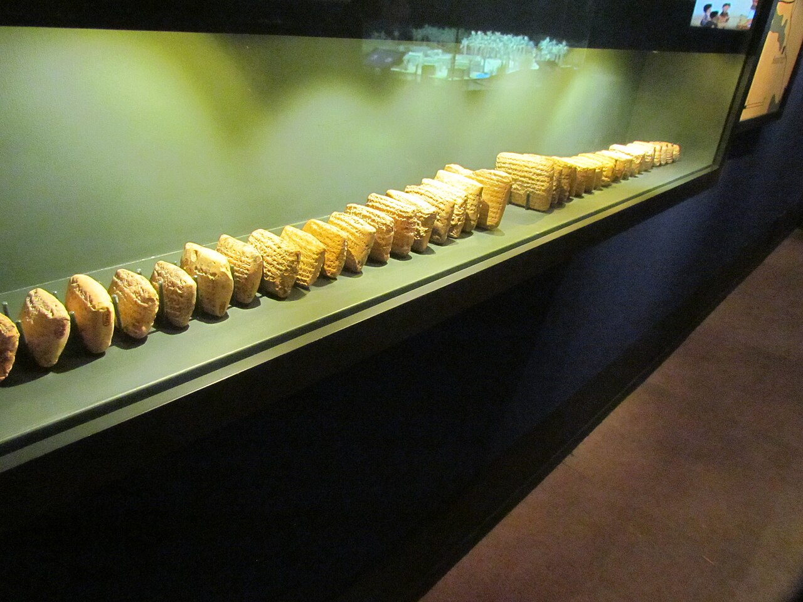

Al-Yahudu Tablets

- Find Name
- Al-Yahudu Tablets
- Historical Period
- Babylonian–Persian
- Artifact Date
- 6th–5th century BC (c. 572–477 BC)
- Date Discovered
- Early 2000s (published from 2014)
- Discovery Location
- Al-Yahudu ('Town of Judah'), near Nippur, Iraq
- Current Location
- Moussaieff Collection, London, and other private collections
- Timeline Era
- Exile
- Description
- About two hundred cuneiform tablets recording the business of Judean exiles settled in a Babylonian town literally named 'Town of Judah.' They farmed, lent, borrowed, and witnessed contracts, bearing Hebrew names — including names honoring Yahweh — across three generations. The tablets surfaced on the antiquities market rather than in a controlled dig, but scholars accept them on internal evidence: the names, the place, and the dates all fit.
- Biblical Significance
- Psalm 137 asks how God's people could sing in a foreign land. The Al-Yahudu tablets answer with ledgers: they did — they worked, married, named their children for the LORD, and stayed recognizably Judahite in Babylon for generations. Exile did not erase them; it is where the Jewish people, as a people of the book, began to take shape.
- Evidence Class
- Contextual
- Interpretations
- Scholars accept the tablets on internal evidence — Judean names, the town name ‘Al-Yahudu,’ and consistent dates — while noting they surfaced on the market, not in a controlled dig.
- Scripture Illuminated
- Related Books
Awaiting Review Not yet checked against scholarly sources. Treat its claims as provisional until this entry is reviewed. About verification
Last reviewed: not yet reviewed